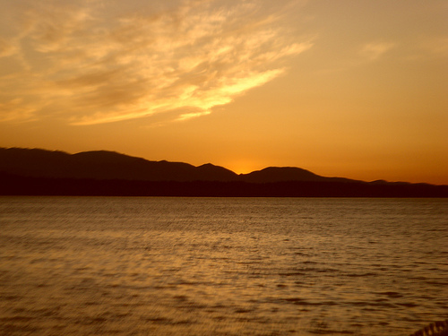

Sonam Sharma
Sunset at Discovery Park
Photo information
- Description
- This Photo was clicked by me from my new camera.. I clicked this photo to capture the beautiful sunset I was watching at the discovery Park in Seattle
- Date
- Sept 19,2009
- Size
- 500x375pixels-90KB
- Filename:
- Nature.jpg
- Camera:
- Samsung Techwin
- Model:
- Samsung NV3
- ISO:
- 80
- Exposure:
- 1/500sec
- Focal Length:
- 19.8mm
- Flash Used:
- No

Comment Like UnLike
Mirul Singh Hey Sonam this picture is very pretty.
I like the colors in this picture. The shades of sunlight in the sky are eye catching.The water is seem as if I can touch it.
Have you taken this piture when you were in the cruz?
Ankita Naik According to me this photo
is not the best picture. I dislike this because I in this picture the color contrast is somewhat to the darker side.
In this picture you were not able to capture the sun when it was about to set behind the mountains. To suggest you for a perfect picture
I would recommend you to try to capture the sunset picture when the sun is about to set, not after the sunset.
Vatsal Bhardwaj Sonam This picture is
one of my favorite pic in your album. I like this photo the most because We went together to discovery park together
for first time. This picture reminds me those day when you First came to USA. This picture has reflected the nature's beauty very well.

The content of these web pages is not generated by and does not represent the views of Santa Clara University or any of its departments or organizations.